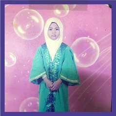
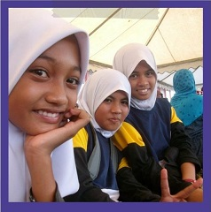
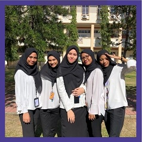

<body>
<div>
<header id="Education"
 <nav>
  <div class="row">
  <div class="row logo">
       
  <div class= "logo-text">
  <h2>NABILA ISMAIL</h2>
 </div>
</div>
 <body>
 <nav>
  <ul>
<ul class="main-nav">
  <li><a href="index.html">Home</a></li>
  <li><a href="biodata.html">Biodata</a></li>
  <li><a href="experience.html">Experience</a></li>
  <li><a href="education.html">Education</a></li>
  <li><a href="family.html">Family</a></li>
  <li><a href="gallery.html">Gallery</a></li>
</ul>
  </nav>
  <section class="section-one" id="education">
  <div class="container">
    <h1>MY EDUCATION JOURNEY</h1>
    <p>This is my education journey from kindergarden until now. 
     During my journey to gain a lot of knowledge,
     I get a lot of supports from family and my friends.</p>
    <button><a href="">ENROLL NOW</a></button>
  </div>
</section>
<nav>
<section class="section-one" id="education">
<div class="section-two-title">
</nav>
<h2><b><font color="#6a5acd">MY PHOTOS</font></b></h2>
<section>
 <body>
   <nav>
  <section class="section-one" id="education">
  <div class="section-two-title">
  </nav>
<h2><i><b><font color="white"MY GALLERY</b></i></h2>
 <body>
   <h1 style="text-align:center"><font size="5">KINDERGARDEN</font></h1>
   <center>
   <p>This is my kindergarden graduation photo.<p>
   <p>I started entering kindergarten when I was 4 years old<p>
   <p>until 6 years old in 2004-2006</p>
<br>
   <h2 style="text-align:center"><font size="5">SK RAJA PEREMPUAN MUZWIN</font></h2>
   <center>
   <p>I entered my primary school on 2007 until 2012<p> 
   <p>at SK Raja Perempuan Muzwin.This is my photo during sport day<p> 
   <p>at my primary school </p>
<br>
   <h3 style="text-align:center"><font size="5">SMK RAJA PEREMPUAN KELSOM</font></h3>
   <center>
   <p>I entered my secondary school on 2013-2017<p>  
   <p>at SMK Raja Perempuan Kelsom,<p>
   <p>and this is photo of me graduating from high school</p>
<br>
   <h4 style=text-align:center"><font size="5">GIAT MARA</font></font></h4>
   <center>
   <p>GIAT MARA. My graduation photo after finishing my studies<p>
   <p> for one year from 2018-2019.</p>
<br>
  <h5 style=text-align:center"><font size="5">UNIVERSITI TEKNOLOGI MARA</font></h5>
  <center>
  <p>I continues my study at UITM Merbok on 2019<p>
  <p> and my major course is Information Management.<p> 
  <p>This is my universiti photo with my groupmate from semester 1 until now.</p>

</body>
</div>
</div>
</section>
</style>


<style>

@import url(https://fonts.googleapis.com/css?family=Romanesco);


}
.back-btn{

    text-decoration: none;
    position: fixed;
    padding: 15px;
    padding-right: 20px;
    bottom: 30px;
    right: 20px;
    background-color: #9a679e;
    color: #FFF;
    border-radius: 30px;
    text-align: center;
    font-size: 30px;
    box-shadow: 1px 4px 6px 0px rgba(173, 173, 173, 1);
    font-family: arial;
    font-size: 18px;
  }

.back-btn:hover {
    background-color: #e68aed;
	
}
.back-btn a{
color: #FFF;
text-decoration: none;
}


.section-one { padding: 40px 0px;}

.section-one-title h2 {
  text-align: center;
  color: #FFFFFF;
  font-size: 160%;
  font-weight: 700;
  letter-spacing: 1px;
  word-spacing: -2px; 
}

.section-one-title h2:after {
  content: " ";
  display: block;
  height: 2px;
  background-color:  #ffe6ff;
  width: 100px;
  margin: 0 auto;
  margin-top: 20px;
}

.section-one-title p {
  margin-top: 20px;
  position: absolute;
  left: 150px;
  width: 500px;
  height: 200px;
  color: #555;
  font-size: 120%;
  font-weight: 300;
  letter-spacing: 4px;
  text-align: justify;
  text-justify: inter-word;
}

.section-one-a-img{
  position: relative;
  width: 350px;
  top: 125%;
  left: 65%;

}

*{
  margin: 0px;
  padding: 0px;
  box-sizing: border-box;
}

html {
  background-color: #6a5acd;
  color: #555;
  font-family: 'Lato', 'Arial', "sans-serif";
  font-weight: 300;
  font-size: 20px;
  text-rendering: optimizeLegibility;
}

.row {
  max-width: 1140px;
  margin: 0 auto 0 auto; 
}

section {
  padding: 20px 0;
}
.clearfix {zoom:1}
.clearfix:after,
.clearfix:before {
  content: "";
  clear: both;
  display: block;
  display: table;
  height: 0;
  line-height: 0;
  visibility: hidden;
}


header {
  background-image: linear-gradient(rgba(0,0,0,0.9), rgba(0,0,0,0.8)), url(gif/girl.gif);
  background-size: cover;
  background-position: center;
  height: 450vh;
  background-attachment: fixed;
}

.txtbox {
  position: absolute;
  width: 1140px;
  top: 50%;
  left: 50%;
  transform: translate(-50%, -50%);

}


header p {
  margin: 0 0 5 0;
  padding: 0;
  color: #6e6b22;
  font-size: 90%;
  font-weight: 300;
  letter-spacing: 0px;
  word-spacing: 0px;
}


.logo {
  float: left;
  padding: 0;
  margin: 20px 0px 0px  0px ;
}

.logo-img {
  height: 60px;
  width: auto;
  float: left;
}

.logo-text {
  text-align-last: justify; 
  margin: 0 0 0 5px;
  font-family: "Romanesco";
}

.logo-text h2 {
  margin: 0 0 20 0;
  color: #fff;
  font-family: "Romanesco";
  font-size: 100%;
  font-weight: 300;
  letter-spacing: -0.5px;
  word-spacing: -2px;
   
}

.main-nav {
  float: right;
  margin-left: 300px;
  margin-top: 30px;
  padding: 0;
  list-style: none;
  font-weight: 500;  
}
.main-nav li {
  display: inline-block;
  margin-left: 40px;
}
.main-nav li a:link,
.main-nav li a:visited{
  padding: 8px 0;
  text-decoration: none;
  color: #fff;
  text-transform: uppercase;
  font-size: 80%;
  border-bottom: 2px solid transparent;
  transition: border-bottom 0.7s;
}

.main-nav li a:hover,
.main-nav li a:active{
  border-bottom: 2px solid #bfa70b;
}

*{
  margin: 0;
  padding: 0;
  box-sizing: border-box;
  font-family: "Century Gothic", sans-serif;
  transition: 0.10s; 
}
a{
  color:  #fff;
  text-decoration: none;
}

/* CONTAINER */

.container{
  width: 100%;
  height: 80vh;
  padding-top: 30vh;
  background-image: linear-gradient(#000000c3, #000000c3), url(gif/bird.gif);
  text-align: center;
  color: #fff;
}
.container h1{
  font-family: serif;
  margin-bottom: 20px;
}
.container p{
  margin-bottom: 30px;
  letter-spacing: 2px;
}
.container button{
  padding: 10px;
  background: none;
  border: 1px solid #fff
  
</style>

</body>
</html>